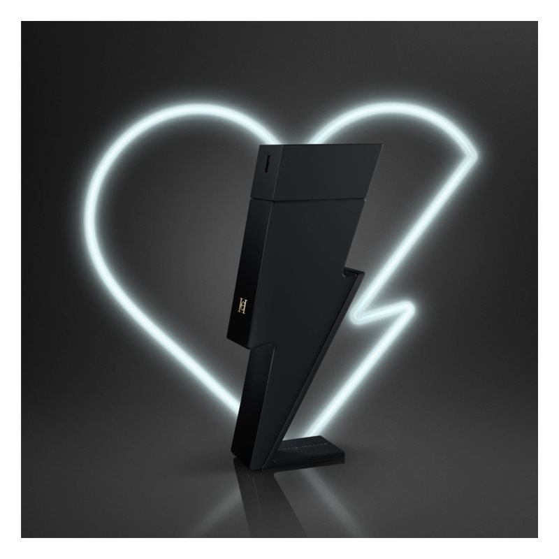

| Note de varf | GRAPEFRUIT, CANNABIS |
| Note de inima | PIPER NEGRU, GERANIUM |
| Note de baza | PIELE, VETIVER |
| Grupe de parfumuri | PIELOASE |
Nu este așa că regulile sunt făcute ca să fie încălcate? Întruchipați și dvs. acest mesaj. Parfumul Carolina Herrera Bad Boy Le Parfum a adus această idee în compoziția sa plină de curaj, exprimată și mai intens decât în parfumul precedent, Bad Boy. Comparativ cu celebrul parfum Bad Boy, care se mândrește cu un flacon în formă de fulger, acest parfum este și mai sofisticat. Aceasta datorită designului mat nu doar al flaconului, ci și al ambalajului. Design-ul exprimă o dorință de a trăi multe aventuri și de a explora locuri nedescoperite. Chiar aceste senzații le va stârni cel care se dă cu acest parfum.
